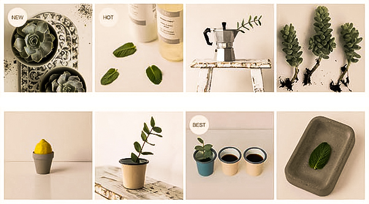

彼岸の花 偏安一隅 静静生活
商品分类 >
我喜欢一些花儿，静静地开放，从不声张。小小的花朵，有着异样的芬芳...
I love flowers, quietly open, never quiet. Little flowers, with the same fragrance...


多肉植物是指植物营养器官肥大的高等植物，通常具根、茎、叶三种营养器官和花、果实、种子三种繁殖器官/。在园艺上，又称肉质植物或多肉花卉，但以多肉植物这个名称最为常用。
品质保障 | 七天无理由退换货 | 特色服务体验 | 帮助中心

店主：Michael_唐僧
飞舞的花儿像一首诗 ?写着秋天的心事 ?带着相思 ?轻轻、轻轻 ?飘向大地 ?也许这只是秋季里的一场游戏 ?